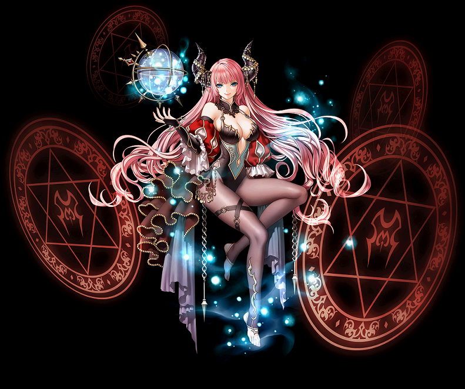

2020/02/19～ 黒魔術師 覚醒スキル一覧
2020/02/19 状態異常に伴うスキル改変後のデータ。
ディアボリックレディ
オブセッショナルチェイサー
ラプチュラスエンチャントレス
ディアボリックレディ
| ディアボリックレディ | |||||||
|---|---|---|---|---|---|---|---|
| [専用パッシブ] 黒炎の古書 | |||||||
| スキル説明 |
地下界の領主に受け継がれる古書の力を借りて、スキル使用時に消費したCP量によって知識を上昇させる。 |
||||||
| スキル効果 |
- 10秒間、使用したスキルの消耗CPの2倍の知識上昇。 |
||||||
| [専用覚醒スキル] 魔力フィールド : 悪疫 | ||||||||
|---|---|---|---|---|---|---|---|---|
| スキル難易度 | 3 | |||||||
| 必要スキル | 魔力フィールド：疫病[50] |
|||||||
| スキル説明 | 巨大な魔力球体で周辺の敵の闇抵抗力を下げる魔力フィールドを設置。自分が魔力フィールドの中にいると闇属性の攻撃力が増加する。 | |||||||
| レベル | 0 | 1 | 2 | 3 | 4 | 5 | ... | 50 |
| 消費CP | 173.8 | 176.6 | 179.4 | 182.2 | 185 | 187.8 | ... | 313.8 |
| 獲得CP | 0 | 0 | 0 | 0 | 0 | 0 | ... | 0 |
| 打撃範囲(m) | 1.9 | 1.908 | 1.916 | 1.924 | 1.932 | 1.94 | ... | 2.3 |
| 持続時間(秒) | 20 | 20.1 | 20.2 | 20.3 | 20.4 | 20.5 | ... | 25 |
| 闇属性抵抗力の減少(Max 50％) | 30% | 30.50% | 31% | 31.50% | 32% | 32.50% | ... | 50% |
| 闇属性抵抗力の減少持続時間(秒) | 5秒 | |||||||
| 闇属性攻撃力増加 | 40% | |||||||
| 闇属性攻撃力増加持続時間(秒) | 5秒 | |||||||
| クールタイム | 5秒 | |||||||
| 射程距離 | 4m | |||||||
| デモンマーシャル | ||||||||
|---|---|---|---|---|---|---|---|---|
| スキル難易度 | 5 | |||||||
| 必要スキル | デモンコマンダー[50] |
|||||||
| スキル説明 | 地下界の次元扉を開いて、魔界総司令官のハルバートで攻撃。知識値によって攻撃回数が増加する。 | |||||||
| レベル | 0 | 1 | 2 | 3 | 4 | 5 | ... | 50 |
| 消費CP | 241 | 245.3 | 249.6 | 253.9 | 258.2 | 262.5 | ... | 456 |
| 獲得CP | 80 | 81.6 | 83.2 | 84.8 | 86.4 | 88 | ... | 160 |
| 闇属性攻撃力 | 143.6 ~ 148 | 146.3 ~ 150.7 | 149 ~ 153.4 | 151.7 ~ 156.1 | 154.4 ~ 158.8 | 157.1 ~ 161.5 | … | 278.8～283 |
| 連打回数 | 3回 | |||||||
| 射程距離 | 6 | 6.05 | 6.1 | 6.15 | 6.2 | 6.25 | … | 8.5 |
| 備考 | 知識の最大値に応じて攻撃回数増加(6000 1回、12000 2回、20000 3回増加)。 | |||||||
| 地下界の軍勢 | ||||||||
|---|---|---|---|---|---|---|---|---|
| スキル難易度 | 5 | |||||||
| 必要スキル | 地下界の武器庫 [50] |
|||||||
| スキル説明 |
ダークコアの力で兵器を追加召喚。兵器召喚スキルの打撃数を3連打に変更する。 また、兵器召喚スキルの既存打撃数によって攻撃力の倍数が増加。 このスキルを活性化させると、終わらない苦痛、烙印スキルは活性化できない。 |
|||||||
| レベル | 0 | 1 | 2 | 3 | 4 | 5 | ... | 50 |
| 消費CP | 140.3 | 142.8 | 145.3 | 147.8 | 150.3 | 152.8 | … | 265.3 |
| 追加打撃(2回)の攻撃力(Max 100％) | 70% | 71% | 72% | 73% | 74% | 75% | ... | 100% |
| 追加攻撃時のダメージ増加量 | 使用したスキルの攻撃回数1回ごとに攻撃力3％上昇(Max100％)。 | |||||||
| 備考 | 兵器召喚スキルの追加攻撃ダメージ(2回分)に対してダメージ増加量が適用されます。 | |||||||
オブセッショナルチェイサー
| オブセッショナルチェイサー | |||||||
|---|---|---|---|---|---|---|---|
|  | |||||||
| [専用パッシブ] デモニックサポート | |||||||
| スキル説明 |
地下界の女王として悪魔たちから魔力の奉仕を受ける。 一度に大量のCPを消費すると、全体CPの一定量を即時に回復する。 |
||||||
| スキル効果 |
最大CPの25％以上のCP消耗スキルを使用すると、全体CPの5％回復。 |
||||||
| [専用覚醒スキル] ブラックスターオブカラミティ | ||||||||
|---|---|---|---|---|---|---|---|---|
| スキル難易度 | 5 | |||||||
| 必要スキル | ブラックスター [50] |
|||||||
| スキル説明 | 地下界の次元扉を開いて、黒い星形をした不安定な魔力球体を召喚。3連続の爆発が発生する。 CP消耗量は自身の最大CPの一定量を越えない。 | |||||||
| レベル | 0 | 1 | 2 | 3 | 4 | 5 | ... | 50 |
| 消費CP | 374 | 379.5 | 385 | 390.5 | 396 | 401.5 | ... | 649 |
| 獲得CP | 0 | 0 | 0 | 0 | 0 | 0 | ... | 0 |
| 闇属性攻撃力 | 345.8〜356.2 | 352.3〜362.7 | 358.8〜369.2 | 365.3〜375.7 | 371.8〜382.2 | 378.3〜388.7 | ... | 670.8～681.4 |
| 打撃範囲(m) | 2.75 | 2.765 | 2.78 | 2.795 | 2.81 | 2.825 | ... | 3.5 |
| 備考 | 消耗CPが自身の最大CPの25％を超えない。 | |||||||
| 攻撃回数 | 3回 | |||||||
| 射程距離 | 4.5m | |||||||
| ダークスモーク | ||||||||
|---|---|---|---|---|---|---|---|---|
| スキル難易度 | 3 | |||||||
| 必要スキル | ブラックスモーク [50] |
|||||||
| スキル説明 | ダークコアを使い黒い煙を噴出させ範囲内の敵にダメージを与える。ダメージを与えるたびに一定のCPが回復する。 | |||||||
| レベル | 0 | 1 | 2 | 3 | 4 | 5 | ... | 50 |
| 消費CP | 189.6 | 192.4 | 195.2 | 198 | 200.8 | 203.6 | ... | 329.6 |
| 獲得CP | 30 | 30.6 | 31.2 | 31.8 | 32.4 | 33 | ... | 60 |
| 闇属性攻撃力 | 223.5〜230.3 | 227.8〜238.9 | 232.1〜243.2 | 236.4〜247.5 | 240.7〜251.8 | 245〜256.1 | ... | 438.5～445.3 |
| 備考 | 敵にダメージを与えるたびにCP5回復。 | |||||||
| 持続時間(秒) | 20秒 | |||||||
| クールタイム | 20秒 | |||||||
| 射程距離 | 4m | |||||||
| 攻撃範囲 | 2m | |||||||
| 罪深き烙印 | ||||||||
|---|---|---|---|---|---|---|---|---|
| スキル難易度 | 5 | |||||||
| 必要スキル | 烙印 [50] |
|||||||
| スキル説明 |
ブラックヴォルカニック、ブラックライトニング、ブラックスタースキルでダメージを与えた敵に烙印を押す。 烙印は2つ重なると爆発してダメージを与える。このスキルを活性化させると、終わらない苦痛、地下界の武器庫スキルは活性化できない。 |
|||||||
| レベル | 0 | 1 | 2 | 3 | 4 | 5 | ... | 50 |
| 消費CP | 166.5 | 168.95 | 171.4 | 173.85 | 176.3 | 178.75 | ... | 289 |
| 烙印ダメージ攻撃力排水 | 45% | 45.70% | 46.40% | 47.10% | 47.80% | 48.50% | ... | 70% |
| 烙印持続時間 | 30秒 | |||||||
| 備考 | 烙印2重複時に爆発闇ダメージ追加 | |||||||
| 備考 | 該当スキルを使うと[n]CP追加消費 | |||||||
ラプチュラスエンチャントレス
| ラプチュラスエンチャントレス | |||||||
|---|---|---|---|---|---|---|---|
| [専用パッシブ] 恍惚の舞踏 | |||||||
| スキル説明 |
敵をうっとりさせる舞いを踊る。攻撃回避時に移動速度が大幅に増加する。 |
||||||
| スキル効果 |
攻撃回避時に10秒間、移動速度50％増加。 |
||||||
 |
[専用覚醒スキル] 破滅の円盤 | |||||||
|---|---|---|---|---|---|---|---|---|
| スキル難易度 | 5 | |||||||
| 必要スキル | 切滅の円盤 [50] |
|||||||
| スキル説明 |
威力を高めるために魔力を凝縮させた爆発性の円盤を敵に飛ばす。 ダメージを受けた敵は攻撃速度が低下する。 移動速度が減少した敵については追加攻撃し、攻撃を受けた範囲とスキル攻撃力が増加する。 |
|||||||
| レベル | 0 | 1 | 2 | 3 | 4 | 5 | ... | 50 |
| 消費CP | 285.1 | 289.7 | 294.3 | 298.9 | 303.5 | 308.1 | ... | 515.1 |
| 獲得CP | 35 | 35.7 | 36.4 | 37.1 | 37.8 | 38.5 | ... | 70 |
| 闇属性攻撃力 | 212.8〜219.2 | 216.8〜223.2 | 220.8〜227.2 | 224.8〜231.2 | 228.8〜235.2 | 232.8〜239.2 | ... | 412.8～419.2 |
| 打撃範囲(m) | 0.8 | 0.81 | 0.82 | 0.83 | 0.84 | 0.85 | ... | 1.3 |
| 射程距離(m) | 6 | 6 | 6 | 6 | 6 | 6 | ... | 6 |
| 攻撃速度低下量(Max 10%) | 7.5% | 7.6% | 7.7% | 7.8% | 7.9% | 8.0% | ... | 10% |
| 低下持続時間 | 4秒 | |||||||
| 移動速度低下に伴う攻撃範囲増加 | 1.8 | 1.81 | 1.82 | 1.83 | 1.84 | 1.85 | ... | 2.3 |
| 移動速度低下に伴うスキル攻撃力増加 | 276.6〜284.9 | 281.8〜290.1 | 287.0〜295.3 | 292.2〜300.5 | 297.4〜305.7 | 302.6〜310.9 | ... | 486.6～494.9 |
| 備考 | 周辺の移動速度が減少した全ての敵に攻撃 | |||||||
| ストームデビル | ||||||||
|---|---|---|---|---|---|---|---|---|
| スキル難易度 | 4 | |||||||
| 必要スキル | ダストデビル [50]
|
|||||||
| スキル説明 |
魔力の竜巻を発生させて敵にダメージを与える。 移動速度が減少した敵に使用すると、必ず竜巻の中心部に強制的に移動させることができる。 |
|||||||
| レベル | 0 | 1 | 2 | 3 | 4 | 5 | ... | 50 |
| 消費CP | 229.5 | 233.2 | 236.9 | 240.6 | 244.3 | 248 | ... | 406.5 |
| 獲得CP | 35 | 35.7 | 36.4 | 37.1 | 37.8 | 38.5 | ... | 70 |
| 闇属性攻撃力 | 180.9〜186.3 | 184.3〜190.6 | 187.7〜194.9 | 191.1〜199.2 | 194.5〜203.5 | 197.9〜207.8 | ... | 350.9～356.3 |
| ドローボディ確率(％) | 35% | 35.50% | 36% | 36.50% | 37% | 37.50% | ... | 60% |
| 備考 | 移動速度低下した敵のドローボディー確率100％ | |||||||
| クールタイム | 3秒 | |||||||
| 射程距離 | 4m | |||||||
| 魔力フィールド : 有刺鉄線 | ||||||||
|---|---|---|---|---|---|---|---|---|
| スキル難易度 | 3 | |||||||
| 必要スキル | 魔力フィールド：棘 [50]
|
|||||||
| スキル説明 |
巨大な魔力球体で周辺の味方の魔法致命打発生確率を高める魔力フィールドを設置。 残りCP量が少ないほど魔法致命打発生確率が上昇する。 |
|||||||
| レベル | 0 | 1 | 2 | 3 | 4 | 5 | ... | 50 |
| 消費CP | 173.8 | 176.6 | 179.4 | 182.2 | 185 | 187.8 | ... | 313.8 |
| 獲得CP | 0 | 0 | 0 | 0 | 0 | 0 | ... | 0 |
| 打撃範囲(m) | 1.9 | 1.91 | 1.92 | 1.92 | 1.93 | 1.94 | ... | 2.4 |
| 持続時間(秒) | 20 | 20.1 | 20.2 | 20.3 | 20.4 | 20.5 | ... | 25 |
| 魔法クリティカル確率上昇(Max 30％) | 18% | 18.30% | 18.60% | 18.90% | 19.20% | 19.50% | ... | 30% |
| 備考 | 残りCP量[20・10・5]％以下の時、味方の魔法致命打[10・15・20]％増加。 | |||||||
| 持続時間(秒) | 5秒 | |||||||
| クールタイム | 5秒 | |||||||
| 射程距離 | 4m | |||||||